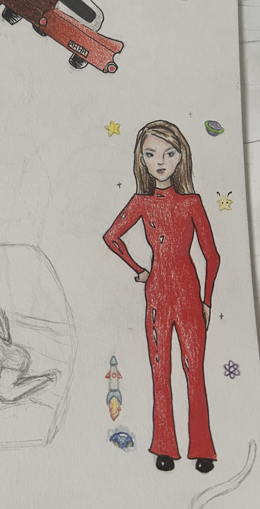

Hold my hand while I draw this
August 15, 2025: I love to watch music videos and draw the iconic looks. My favourite is this Britney Spears drawing I did from her "Oops!...I Did It Again" MV:

Today, I woke up in a bad mood at 3:45 AM (jetlag). I couldn't fall back asleep again, so I decided to draw to keep myself busy before it was an acceptable time to start the day.
The thing is,,, I don't draw anymore ever, so there's been years worth of regression in my skills loll. Anyways, I'm drawing one of the looks from Alicia Keys "You Don't Know My Name". I thought her hair was soo cute.
Here's my initial sketch. Feelinggg unconfident. I need someone to hold the pencil in my hand and draw the rest for me.
Now I'm adding more details and it looks better. In the MV, there isn't a clear shot of her dress, so I just made up a little pattern:
I went to start lining the drawing but I realized I don't have artsy, fine tip black markers anymore. I just used my mom's black pen. The ink wouldn't come out nicely:

Finally, it's time for colouring and adding a few doodles. Here's the finished product. I think it's cute. I tried to draw her in a pasSionAteLy siNgiNg pose but it kind of looks like she's just trying to ask a question in class. And the other arm is looking funny. I'm glad I did this because I feel better now :-].
DIY Steamed Buns (difficulty 100)
June 15, 2025: I challenged myself in the kitchen (which I do every time I cook, anyways). Steamed buns should be so smooth on the outside and airy on the inside. For an extra challenge, I made the steamed buns cute animals.
The first time was horrible. The buns were so dense… and wet…

The second time, I let the buns rise longer, but still the same result.
The third time, I finally learned I was killing the yeast by using hot water, so I stopped doing that. I also learned that milk can help activate the yeast better, so I started using milk instead of water.
Sure enough, the buns got puffier, but not by enough. I also introduced some COLOUR. (Update: I accidentally deleted the picture at some point, it was of my pig-shaped steamed buns with pink ears and snouts and one round bun with a pink swirl)
The fourth time, I let the dough rise overnight instead of just an hour. The dough became double the size, and I was so hopeful. However, WHO was going to tell me that I had to knead the air bubbles out before steaming??
So, in the end, my steamed buns had unproportionate, giant air bubbles instead of tiny ones and the BBL buns DEFLATED to half their size.

The fifth time, I had my friend joining me, and this was the most successful attempt.
We let the dough rise outside under the sun, so it quickly doubled in size. Then we got really funky with the designs.
She used nutella and tried to make some intricate swirly patterns she had found on Wechat. The swirl was achieved but the chocolate was smearing LOL.
I put chocolate on the inside of mine, made another pig of course, and a star pattern (looked ugly after cooking).
Designs aside, we had finally achieved the fluffy inside!!!!! Attempts 1-4 had unpleasurable textures to them, but this attempt was actually good!
The only improvement for the future is making the buns smoother, which I think just requires more kneading out the air bubbles.

75-hour work week
June 9, 2025: Boss is changing the work schedule, so I'm working seven days in a row between the old and new regimen. AHHHHHHHHHHHHHHHHHHH. Good thing this is only a summer job.